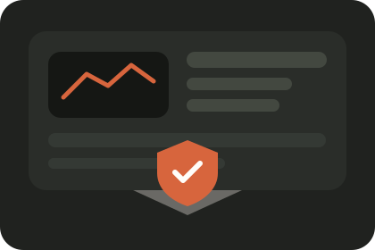
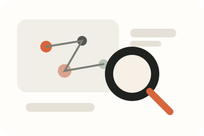
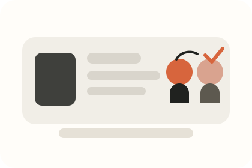
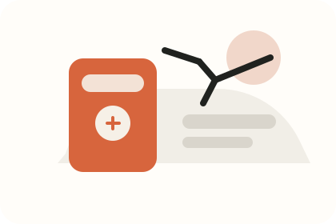

직접 확인하고 판단합니다
주변의 평가보다 제가 직접 확인한 사실과 경험을 기준으로 판단하려고 합니다.
ABOUT ME

컴퓨터소프트웨어를 전공한 뒤 여러 경험을 거치며 진로를 다시 고민했습니다. 지금은 네트워크와 정보보안을 공부하며, 배운 개념을 실제 로그와 코드에 연결해보는 중입니다.
정답만 외우기보다 “왜 이렇게 되는지”, “실제로 어디에 쓰이는지”를 확인해야 납득하는 편입니다. 그래서 공부할 때도 작은 예시를 직접 만들어보고, 막히면 질문을 쪼개서 하나씩 확인합니다.
주변의 평가보다 제가 직접 확인한 사실과 경험을 기준으로 판단하려고 합니다.
결과만 외우기보다 왜 그런 결과가 나오는지 실제 흐름과 연결해 이해합니다.
EXPERIENCE
낯선 환경과 수업 방식 속에서 생활하며 새로운 환경에 적응하는 경험을 했습니다. 준비가 완벽하지 않아도 직접 경험해보며 배울 수 있다는 자신감을 얻었습니다.
새 직원에 대한 주변 평가를 그대로 받아들이기보다 직접 함께 근무하며 판단했고, 업무 적응을 도왔습니다. 이후 당시 도움이 되었다는 감사 편지를 받았습니다.
네트워크 기본기와 Python 로그 분석을 배우며, 수업에서 익힌 개념을 프로젝트와 실제 로그 흐름에 연결해보는 중입니다.
THREE SIDES OF ME
버튼을 눌러 실제 경험을 확인해보세요.
네트워크와 보안을 공부하면서 결과만 외우기보다 “왜 필요한지”와 “실제로 어디에서 쓰이는지”를 확인합니다. IP, 서브넷, 방화벽, 로그 분석처럼 처음엔 어렵게 느껴진 개념도 실제 흐름과 예시로 연결해가며 이해하는 편입니다.

카페에서 새로 들어온 직원에 대한 좋지 않은 평가를 들은 적이 있었지만, 그 말만으로 판단하지 않고 직접 함께 근무하며 지켜봤습니다. 충분히 잘할 수 있다고 판단해 업무 적응을 도왔고, 이후 그 직원에게 당시 도움이 되었다는 감사 편지를 받았습니다.

2023년 일본 교환학생에 참여해 새로운 환경과 수업 방식 속에서 생활했습니다. 낯선 환경에서도 직접 부딪혀보며 적응했고, 그 경험 이후 고민만 오래 하기보다 한번 해보는 쪽을 선택하려고 합니다.

WHAT I’M DOING NOW
IP, MAC, TCP/UDP, DNS, ARP, NAT, 서브넷 등 네트워크의 기본 흐름을 배우고 있습니다.
로그를 읽고 분류하며, 반복 로그인 실패나 야간 로그인 같은 이상행위를 탐지하는 흐름을 연습하고 있습니다.
사내 사용자의 외부 서비스 이용 행동을 DB · DNS/Web · 네트워크 로그와 연결해 위험도를 판단하는 보안관제 팀 프로젝트를 구현하고 있습니다.